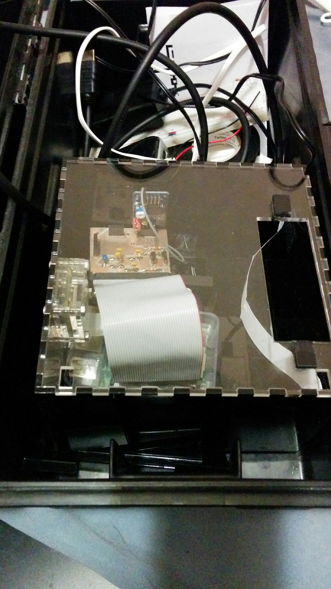
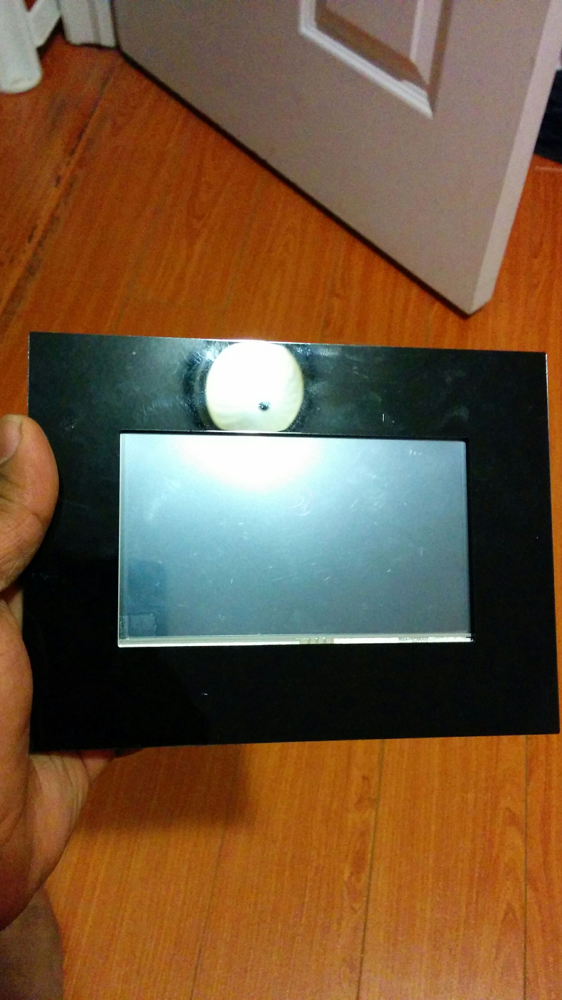
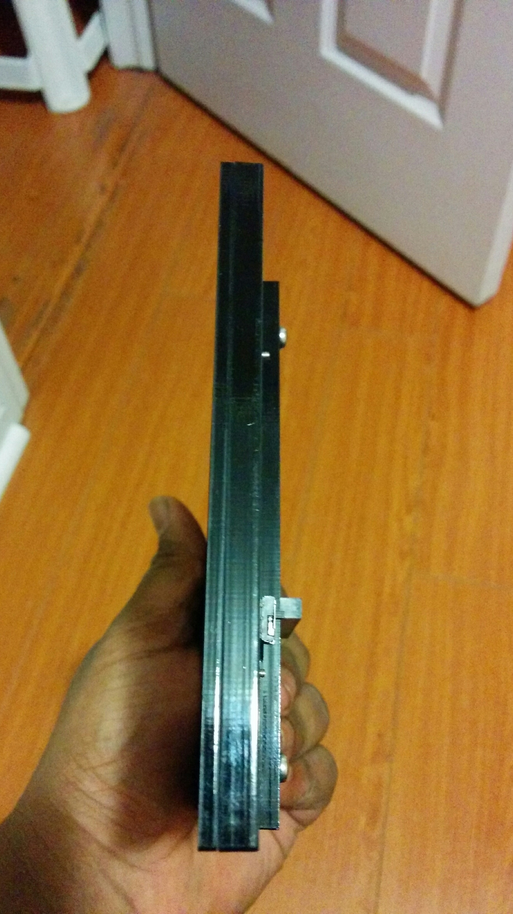
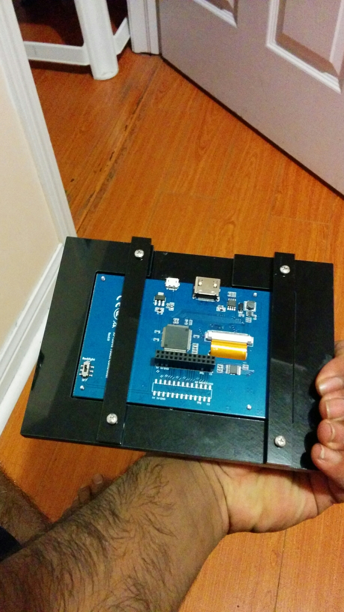
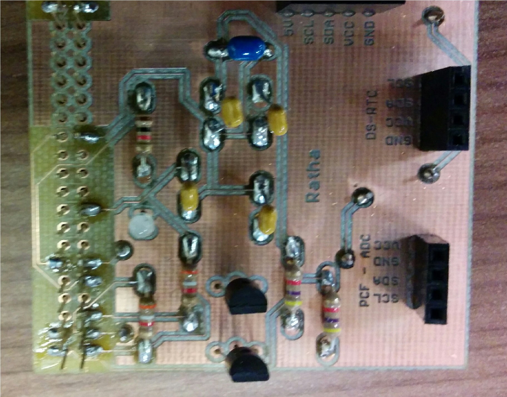
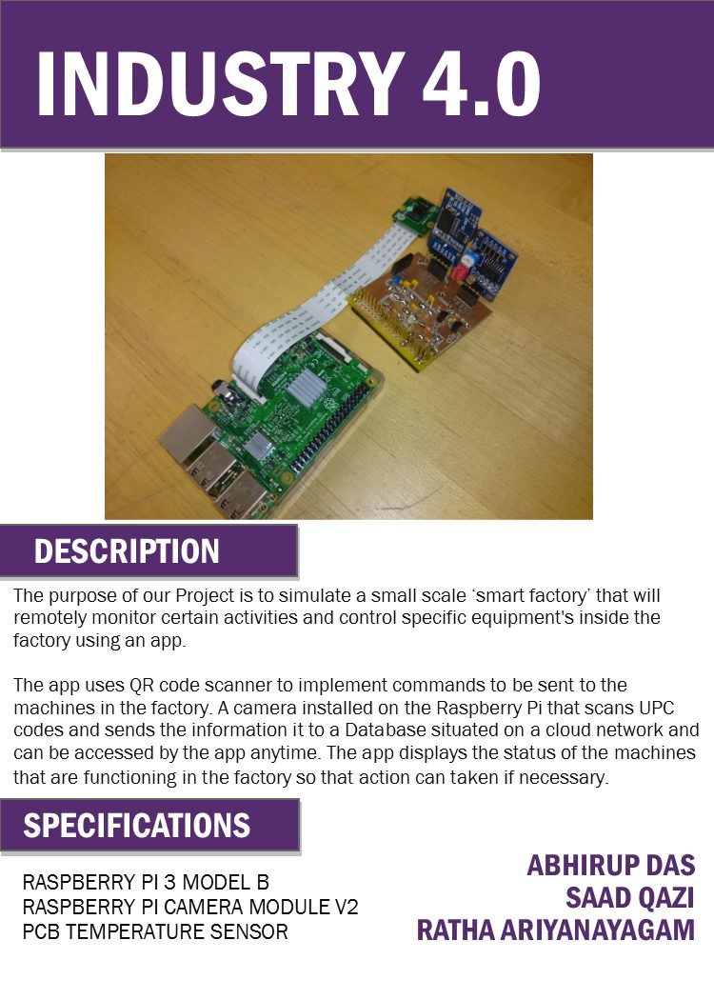
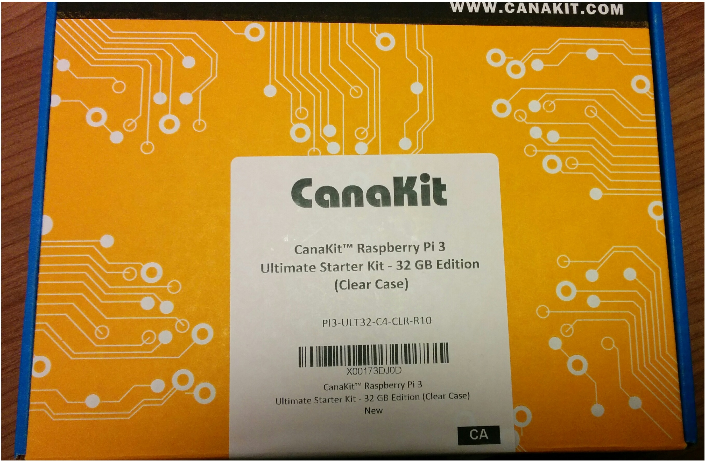
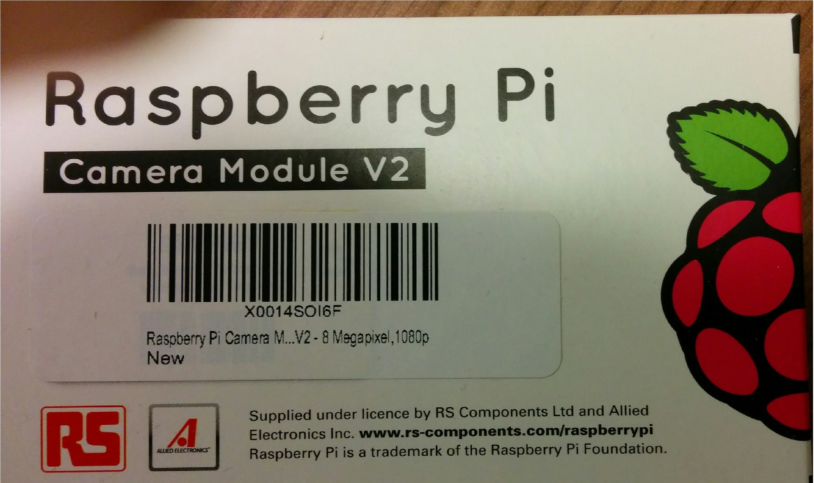

Week 14
- Introduction using a system diagram
- The industry 4.0 is a device that uses a camera to scan in QR_code as command to allow a machine display information about it's self like the temperture, vlotage, brightness, and other thing.
- Bill of Materials/Budget
- Time Commitment
- Mechanical Assembly
- Get all you part
- Cerate the PCB board and solder it together
- Onces that is done use a breadborard to make a voltage divider and connect a seperate power supply to it and connect the out to the AU0 pin on the PCB PCF8591T and remove the fist jumper cable
- Now connect the camrea and the PCB borad to the rasebrrey pi 3
- if you bought the 5' display screen and the powersupply that was in the buget then your going to what to connect them to. The power supply conncet to the diplay use output2 beacuse it will give you 5V by 2A which you need for the diplay. The Display sonnect to the rassbrry pi 3 by HTML.
- you can also make cases for the camra, diplay and the device show beleow
Download Camera
Download device_box
Download Display
- The camera case is six piease layered over covering the camera the thickness of the acrylic is 3mm and use 3M screws to hold it together
- The dipaly case is made of one pieces of 3mm acrylic and three pieace of 6mm acrylic. The biggest 6mm pieace has to be tapped to make trade for the 3M screws. Then glue the trade picaec with the 3mm pieces then use the to stick pieces to hold the display in place
- the device_box is a box that need to be glued together and the top is not glue and the two L shape piecs go into the two small holes in the top and is use to hold the display also you can remove the first layer of the camra case and and the camera to the side of the box becasue the box is make of 3mm acrylic
-    
- Know that the Assembly is done we know start the power up where i will give you the step to make the QR_code reader
- First you need to start the rasberry pi connect the pi to the internet then do updates and upgrade with in the terminal
- Go to the following website called "TECH NOOB Raspberry pi barcode scanner" and follow the steps
- Contiue following steps until you finish download SimpleCV then you will have to install uv4l driver for the camra can recognise simpleCV
- Go to the website: "linux project" to install the driver for the camera
- After installing the new drivers go back to TECH NOOB and contiue doing the step
- Once you are done with the step on the webstie go and download the code Production Testing and run to
- PCB / Soldering
- First you will need to download Eagle the link is provide below:
- After the download and installing of eagle you will need to download the following folder
- Open the board file in Eagle make the board print it out and then solder it and it will look somthing like the: 
Eagle SoftwareModularHatStripped folder
- Power Up
- Video of the LED work and display info:
- Unit Testing
- Code for testing the QR code scannner found on the web Tech noob
- Downlad file and run after assembling
-
Download QR_reader.py
- Production Testing
- The final code use the PCB LED to tell the user that the QR code was readable by having the LED change color from red to green where Green mean it read the code and turn red after 2 second
- The code also implemant command depending on what was scanned in
- If QR code is Temperutre it will display the temputure in the terminal
- If QR code is Voltage it will display the Voltage in the terminal
- If QR code is Light it will display the light brightness in the terminal
Download Final_QR_reader.py
| Parts | Requirment/Optional | Price | |
|---|---|---|---|
| CanaKit Raspberry Pi 3 Ultimate Starter Kit - 32 GB Edition | required | $141.73 | |
| Raspberry Pi Camera Module V2 - 8 Megapixel,1080p | required | $64.47 | |
| Mini Compact Portable Power Bank 10000mAh Ultra Slim Power Pack Mobile Phone Charger External LG Battery Dual USB Charger Compatible Universal High Speed Quick Charging iPhone, iPad, Samsung | Optional | $34.42 | |
| Kuman SC5A 5''inch Resistive 800x480 HDMI TFT LCD Display Module with Touch panel USB Port and Touch pen for Raspberry Pi 3 2 Model B RPi 1 B B+ A A+ | Optional | $59.99 | |
| CanaKit 2.5A Raspberry Pi Micro USB Power Supply / Adapter (UL Listed) | Optional | $13.95 | |
| PCB borad | required | $30 | |
| Total | $351.86 |
| Task done | Time | Comments |
|---|---|---|
| Default time in class | 45H | 3 hour a day in class for the each week |
| Soldering PCB borad | 5h | First time solding |
| buliding camera case | 1h | got the case online designed by bullar |
| Testing the hatsencer and traffic light code | 1h | Doing both of them |
| Refoumaing SD card | 7h | The sd card got corupped twice |
| installing SimpleCV and uv4l | 2h | takes time downloading and installing |
| adding LED change to the code | 6h | python code first time spacing problem |
| make display case | 4h | make the case, tape for the screw and glue parts together |
| box for the progect | 7h | make the design of the case, make cardborad version for testing, make out of acrylin and glue together |
presentation
Presentation
Week 12
Progress Report
- So far I'm trying to get the LED on the PCB to working with the QR code Scanner to make the LED change color whenever it scanner gets an input. The LED starts of as Red and then when the QR code scanner read in an input the LED should turn Green for a second or 2 then turn back to Red. The problem that I'm having is that the python is not work so well with me because ever time. I add in the code of the LED and then run it give me errors. Hopefully I can get it to work by the end of the week.
- To get the LED to work I need to find which pins are used to turn on the LED on the PCB which were pin 11 and 12. By changing the output of these pin you can change the color of the led. You also need import two libraries the time library to allow you to wait and the RPi.GPIO library to allow you to use the pin on the raspberry pi.
- Budget has be increase again by $40 to get power supply for the display screen
- schedule is going well need to make case by next week
- LED for Python
Week 11
Progress Report
- The progress of the hardware project is going will we just finished our open house on Saturday. The part that we demoed was that camera can turned into a QR_code Scanner to scan in the code and display the input on the terminal.
- During the open house our raspberry pi OS got corrupted when we going to demo. When I turn on the raspberry pi by powering it up it give me a black screen with the 4 raspberry on the left hand top corner and would not load up. So I had to download new OS which took some time and then reformate the SD card then write the new OS to the SD card then turn on the raspberry do the update, upgrade, and install necessary package to make the QR_code scanner to work.
- The cause of the problem might have been that we didn’t have the right amount of current. The amount of current that was need was 2.5A and the phone charge that I used as only proving 700mA. So that would have been that why the raspberry OS to get corrupted.
- Also, my new power supply and display screen came today. Know I need to make a case for all my part. Know the only thing left to do is to connect the raspberry pi to the database that get it data from the hat sensor to display the information on the terminal.
- I think I’m a little behind in my schedule and need work a little fast to catch up.
- Budget was increase by buying the display and new power supply was about $89 add to the budget.
Week 10
Progress Report
- So far in the industry 4.0 project we have all the part that we need to make the device and know we just need to do the coding for the project.
- Got the case for the camera made in the proto-type lab. I found a file for the case online on a website made by bullar he or she published it in September 27 2014 on the website "Thingiverse" the link will be located below. Since I made the case I didn't go out to buy it saving me some money. There were some problems with the case because it was made in 2014 the case was made for the old camera so I had make a small change so that the camera fits in the case.
- Other problem I had was that the PCB board cover the camera port. I was still able to connect the camera but the problem that could happen is that the PCB board might damage the tape wire that connects the camera. So fix it I'm using ribbon cable to connect the raspberry pi with the PCB without cover the camera port. The last problem that I have is that I lost my power, so I need to get a new.
- There might be chagnes to the budget becuase I lost my power supply and also, I'm thinking of getting a touch screen that cost $30. All that is left to do is the coding and making the database.
Week 9
Video: Industry 4.0
Week 8
Placard: Industry 4.0
-
Click here
- 
Week 6
Progress Report:
- Mechanical assembly of hardware components are being done. The hardware components have been acquired also the PCB has been soldered and tested. The are still many things we need to do like making the case for the camera, connecting the camera and PCB to the Raspberry pi.
- The current problem that is arising is on how to link the hardware to the cloud services. We are still working on it to figure it out
- Another problem was buying the camera because when I first bought the camera i bought the wrong on so i had to cancel it and by the right camera.
- The cost of the part was more than estimated. It was $151.30 for the Rasberry pi, $64.47 for the camera and the PCB was given to us be the school so we didn't have to pay for it.
- the total cost in the end was $215.77.
- some web that will help me are:
- Hardware
- Raspberry Pi 3 Model B with Wi-Fi and Bluetooth technology
- Raspberry Pi Camera Module Version-2 with 8Megapixels sensor
- Temperature sensor solder on PCB  
- Budget:
- Project Schedule Due Get Schedule
- Start off by watching some soldering video
- Project Proposal Due
- Parts Kit. Safety including safety glasses, how to handle hazardous materials, be aware of your surroundings and other things
- Install EAGLE software to make the files for the PCB circuit board and sent to be made
- Create a repository for Hardware Project(CENG317) on GitHUb after making an account
- Quiz on part in a box
- Demonstrated the LED to blink on the Raspberry Pi (incomplete)
- make group for project
- Week 5 Progress Report Due (including proof of order)
- Week 6 Progress Report Due
- Week 7 PCB Due
- Week 8 Placard Due
- Week 9 Progress Report Due
- Week 10 Progress Report Due
- Week 11 Progress Report Due
- Week 12 Progress Report Due
- Week 13 Presentation Due
- Week 14 Build Instructions Due
- Week 15 30 Second Script Due
- http://www.openscad.org/downloads.html
- http://www.w3schools.com/html/html_lists.asp
- Introduction
- Software Requirements Specification
- Declaration of Authourship
- References: APA format
- Open House
- Presentations
- QR scanner info
- scanner info
Week 5
Week 4

Week 3
Week 2
Week 1